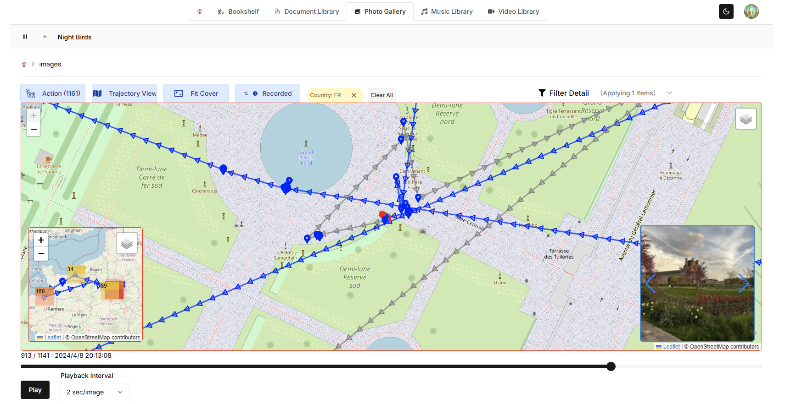
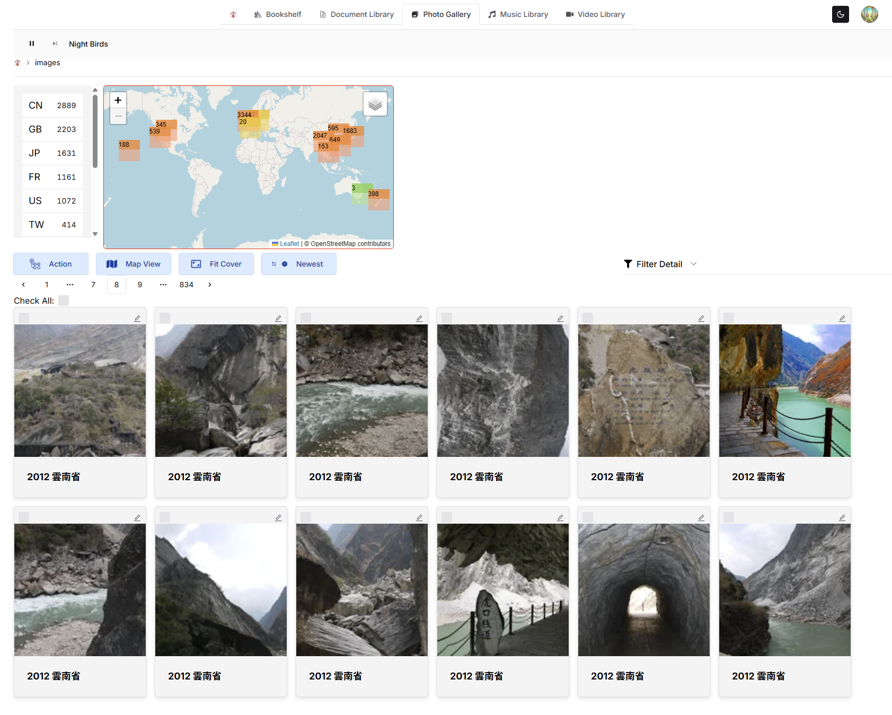
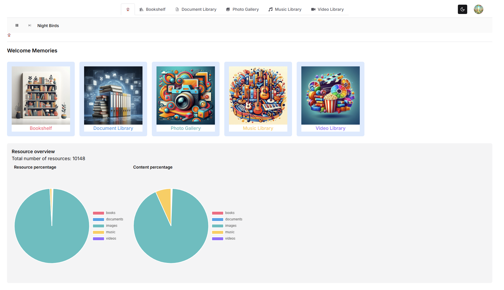
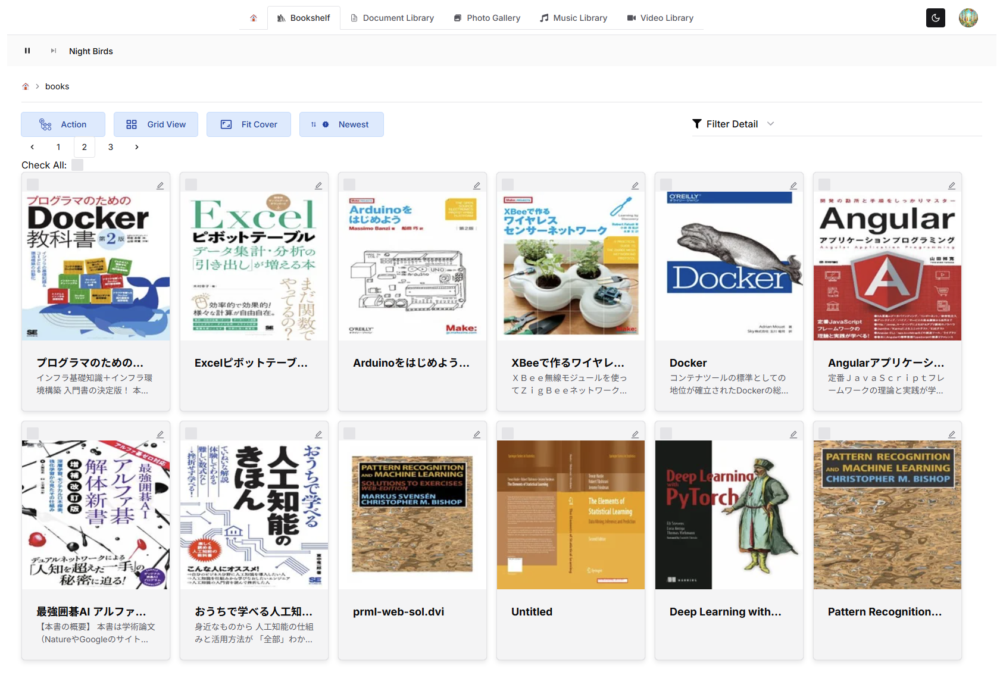
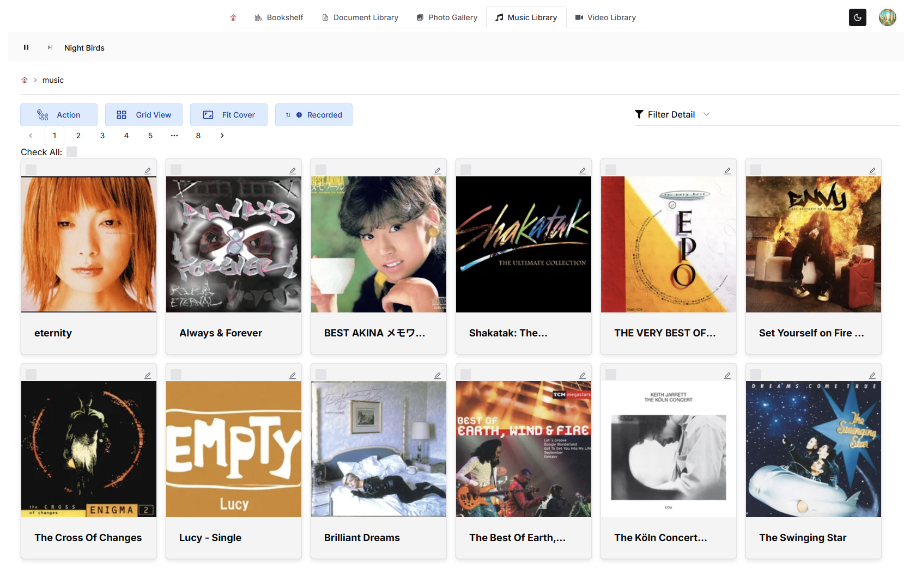
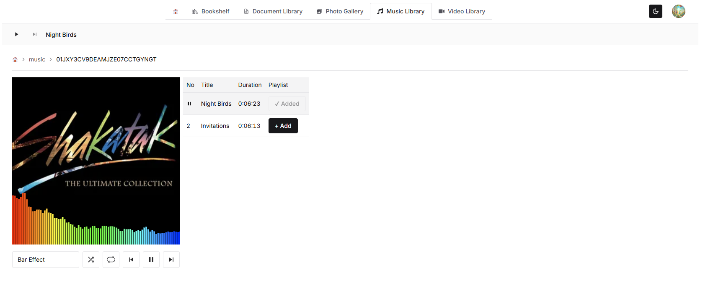
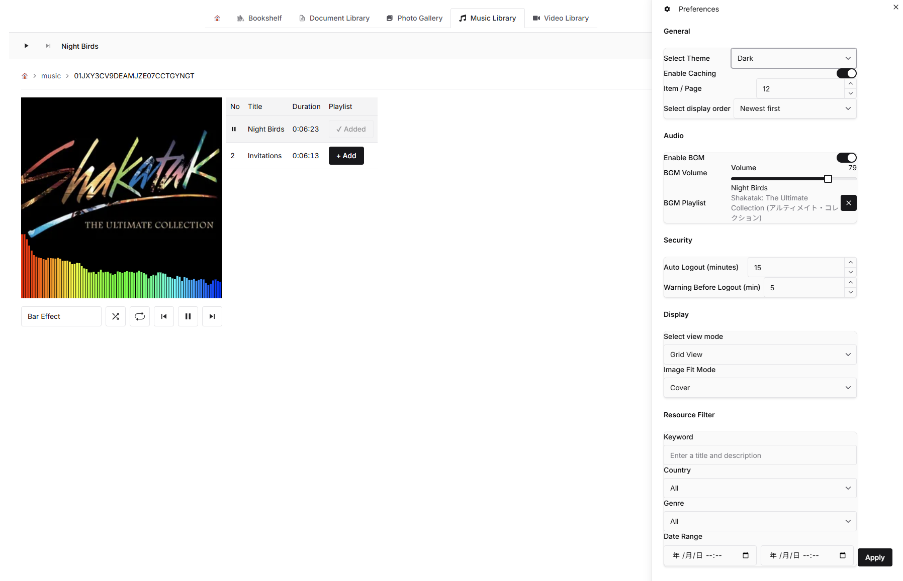

Memories is a flexible and user-centric resource visualization platform designed to help users explore, filter, and relive their recorded experiences.
Whether you're navigating a trajectory map, browsing through media-rich slideshows, or refining your preferences, Memories empowers you to rediscover meaningful moments with clarity and control.
Memories is built on the belief that data should serve the user—not the other way around.
Every component is designed to be modular, responsive, and empathetic to the user's intent, making it ideal for personal archives, creative exploration, or analytical storytelling.
| View | Preview |
|---|---|
| Trajectory View — Explore spatial-temporal paths with zoom and playback controls |  |
| Map View — Visualize resource locations with clustering and hover effects |  |
| Dashboard — Overview of recent activity and resource stats |  |
| Bookshelf — Browse resources in a grid layout with thumbnails and metadata |  |
| Music Library — Filter and explore audio resources by genre and date |  |
| Music Player — Play and preview audio with waveform and metadata |  |
| Preferences Panel — Customize theme, caching, zoom behavior, and more |  |
To run Memories locally using Docker:
mkdir memories
cd memories
git clone https://github.com/forestlaw77/memories-frontend.git
git clone https://github.com/forestlaw77/memories-storage.git
Set up docker-compose.yml
Create a docker-compose.yml file in the root of your memories directory:
services:
frontend:
build:
context: ./memories-frontend
dockerfile: Dockerfile.dev
container_name: memories-frontend
image: forestlaw/memories-frontend
volumes:
- ./memories-frontend:/src
- ./memories-frontend/.vscode-server:/root/.vscode-server
ports:
- "8080:8080"
networks:
- memories-network
command: pnpm dev
user: "${UID}:${GID}"
storage:
build:
context: ./memories-storage
dockerfile: Dockerfile.dev
container_name: memories-storage
image: forestlaw/memories-storage
volumes:
- ./memories-storage/local_storage:/local_storage
- ./memories-storage:/src
- ./memories-storage/.vscode-server:/root/.vscode-server
ports:
- "4001:4001"
networks:
- memories-network
environment:
- STORAGE_DIRECTORY=/local_storage
user: "${UID}:${GID}"
networks:
memories-network:
driver: bridge
Each project requires a .env.local the for runtime configuration.
You can start by copying the provided dot-env.example files:
# Copy template files to create your local environment configs
cp memories-frontend/dot-env.example memories-frontend/.env.local
cp memories-storage/dot-env.example memories-storage/.env.local
🛡️ Note: We use dot_env.example instead of .env.example to avoid accidental inclusion in version control. Make sure .env.local is listed in .gitignore and never committed.
Then fill in the required values:
memories-frontend/.env.local)memories-storage/.env.local)🔐 Make sure both projects use the same
GOOGLE_CLIENT_IDandGOOGLE_CLIENT_SECRETto ensure consistent authentication.
docker compose up
Then access the frontend at http://localhost:8080 The storage server will be available at http://localhost:4001
✅ Notes
memories-storage/local_storage to test resource loading..vscode-server volume ensures persistent extensions..env.local in each project. See dot-env.example for reference.
🛡️ Environment variables are validated automatically in CI using
dot-env.exampleand a generateddot-env.ci.
To set up your local environment, copydot-env.exampleto.env.localand fill in the values manually.
This mode is designed for:
To run Memories locally without authentication:
memories-frontend/dot-env.example to memories-frontend/.env.localSKIP_AUTH=trueNEXT_PUBLIC_SKIP_AUTH=truememories-storage/dot-env.example to memories-storage/.env.localSKIP_AUTH=truedocker compose up✅ Guest users are automatically registered on the backend if they don't exist.
⚠️ Do not use SKIP_AUTH in production environments.
🛡️ Guest users have limited access and data may not persist across sessions.
Do not include .env.local or other .env files in your Docker images. These files may contain sensitive credentials (e.g. OAuth secrets, API keys). If bundled into the image, they can be extracted by anyone with access to the image.
✅ Recommended Practices
.env
.env.local
.env.production
docker run -e NEXTAUTH_SECRET=your-secret -e BACKEND_API_URL=https://api.example.com your-image
💡 Why this matters
Docker images are portable and often shared. Including secrets in the image makes them accessible to anyone who can pull or inspect it. Keeping secrets out of the image ensures your credentials remain secure.
| Layer | Technology | Purpose |
|---|---|---|
| Framework | Next.js | App routing, SSR/SSG, deployment flexibility |
| UI Library | Chakra UI | Accessible, theme-aware component styling |
| Map Engine | Leaflet | Lightweight interactive maps |
| Slideshow | Swiper | Responsive, touch-friendly carousel viewer |
| State Management | Zustand | Scalable local/global state |
| Data Fetching | TanStack Query | Async caching, background updates |
| Styling | CSS Modules + Chakra tokens | Scoped styles and design consistency |
| Icons | React Icons | Visual cues and UI clarity |
Memories is built with:
src/
├── components/ # Reusable UI elements
├── features/ # Domain-specific modules (map, slideshow, settings)
├── hooks/ # Custom logic and state accessors
├── utils/ # Shared helpers and constants
├── assets/ # Icons, images, and static files
└── page.tsx # Root component
After starting the development server:
Contributions are welcome! Here's how to get started:
Note: This project uses a custom license based on MIT.
SPDX identifier:LicenseRef-Tsutomu-MIT-NC
This software is dual-licensed:
You may choose the license that best fits your use case.
🔒 A commercial license is an important way to help us keep developing and to ensure you can use the software with confidence.
📧 Contact: forestlaw.me+github@gmail.com
本ソフトウェアはデュアルライセンスです。
用途に応じて、適切なライセンスを選択してください。
🔒 商用ライセンスは、みなさまに安心して使っていただくため、そして開発を続けるための大切な仕組みです。
📧 Contact: forestlaw.me+github@gmail.com
Tsutomu Funada
Frontend engineer & Backend engineer & UX designer
📧 Contact: forestlaw.me+github@gmail.com